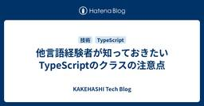

KAKEHASHI Tech Blog
https://kakehashi-dev.hatenablog.com/
カケハシのEngineer Teamによるブログです。
フィード

他言語経験者が知っておきたいTypeScriptのクラスの注意点 76
76
KAKEHASHI Tech Blog
はじめに こんにちは、岩佐 幸翠(@kosui_me)です。カケハシで認証基盤・ライセンス基盤・組織階層基盤などのプラットフォームシステムを開発・運用する認証権限基盤チームのテックリードをしています。 TypeScriptのクラス構文は、一見するとJavaやC#などの言語と非常に似ていますが、その背景にあるJavaScriptの特性により、振る舞いに重要な違いが存在します。これらの違いを理解することは、これまでの経験を活かしつつ、TypeScriptで堅牢なアプリケーションを構築する上で非常に重要です。 本記事では、主にJavaやC#など、クラスベースの静的型付け言語に慣れ親しんだエンジニアの…
7日前

検証コストがゼロに近づくと、アイデアの価値はどう変わるか？
KAKEHASHI Tech Blog
はじめに 生成AI研究開発チームの横田です。 これまでのシステム開発では、「やる価値がある」と確信できるアイデアにしか時間を割けませんでした。 なぜなら、検証にかかるコストが高く、アイデアを"試す"こと自体がリスクだったからです。 しかし、生成AIの進化によって「まず試してみる」が圧倒的にやりやすくなっています。 本記事では、実際に生成AIと共にシミュレータを作った経験をもとに、「検証コストがゼロに近づいた世界では、アイデアの価値評価がどう変わるのか？」について考察します。 シミュレータを使った実験:薬局ユーザー×AIスループット 検証コストが下がっていると感じた事例として、生成AI機能に対し…
12日前
型とテストで守るカスタムイベント通信 - 実プロダクトでの実装事例
KAKEHASHI Tech Blog
1. はじめに こんにちは。生成AI研究開発チームでAIエージェントの開発をしているNokogiri（@nkgrnkgr）です。 薬局向け業務システムMusubiはAngular製のWebアプリケーションです。このMusubi上で動作するAIアシスタント機能をReactで開発することになりました。Angular製の親アプリケーション（Musubi）とReact製の子アプリケーション（AIアシスタント）という異なるフレームワークが共存する特殊なアーキテクチャとなったため、両者の通信にはカスタムイベントを採用しています。 この記事では、TypeScriptの型システムを活用してカスタムイベント通信…
14日前
ちょっとした質問でいきいきしてきたデイリースクラム
KAKEHASHI Tech Blog
こんにちは、椎葉です。カケハシでVPoT（VP of Technology）をやっています。技術的な視点で現場と経営をつなぐ活動の一つとして、実際にチームに入って開発業務をサポートしています。今日はその中のひとつの事例を紹介します。 Pocket Musubiチーム 今年の6月からPocket Musubiチームのみんなと一緒に開発業務に取り組んでいます。Pocket Musubiは、薬局と患者さんをつなぐ「服薬フォローシステム」です。Musubi電子薬歴と並んで、カケハシの中でも主要なプロダクトのひとつになっています。 チームはエンジニア5名、SRE2名、QAエンジニア3名をはじめとした10…
19日前
【スクフェス大阪2025】スプリントゴール未達症候群への3つの処方箋と人生初登壇の舞台裏
KAKEHASHI Tech Blog
みなさん初めまして！清水翔太（@_smzst）と申します。普段はソフトウェアエンジニアとして、調剤薬局のDXを推進する「Musubi AI在庫管理」というプロダクトの開発に携わっています。 7/19に行われたスクラムフェス大阪2025で「スプリントゴール未達症候群に送る処方箋」というテーマで登壇させていただきました。以前参加したスクラムフェス新潟2025で刺激を受け、今回が初めてのプロポーザル、そして初めての登壇でした。 この記事の目的は登壇内容の紹介とフォローアップです。ぜひ資料と合わせてお読みください！また、気になるセクションだけ読んでいただくでもまったく問題ありません。 目次: そもそも…
22日前
医薬品流通の最適体制を構築する。カケハシのプロダクト展開を加速するデータ連携チームの役割
KAKEHASHI Tech Blog
カケハシで処方箋データ連携チームのPdMを担う岡田裕行と、エンジニアの岩佐孝浩。処方箋データ連携というプロジェクトについて、カケハシの事業全体に影響を与えることのやり甲斐、そして責任の重さについて語ってくれた。 なぜ処方箋データを連携させる必要があるのか 処方箋データ連携チーム PdM 岡田裕行 — まずはチームの役割を教えてください 岡田：チーム発足の経緯からお伝えしますね。 独自の学習モデルによる患者の来局予測をもとに、最適な医薬品の発注・管理を行う『Musubi AI在庫管理』をリリースしました。このシステムをクラウド型電子薬歴『Musubi』のユーザー以外の薬局に導入するためのデータ基…
25日前
ドメインの壁を超えて“自然な交流”を実現するオフサイトの工夫と裏側
KAKEHASHI Tech Blog
こんにちは、Musubi AI在庫管理チーム エンジニアの大村と、Musubiアカウント管理基盤チーム エンジニアの五十嵐です。 私たちは先日、カケハシのSCMドメインとPlatformドメインの合同オフサイトミーティングを企画・運営しました。 ドメイン間の壁を越え、連携を強化するための場作りをどのように行ったか、企画段階から当日の様子までご紹介します！ オフサイト開催に至った背景 今回合同オフサイトを開催したSCMドメイン、Platformドメインはそれぞれ下記の役割を担っています。 SCMドメイン：医薬品物流の仕組みの最適化 Platformドメイン：プロダクト横断の共通基盤や共通機能の提…
1ヶ月前
生成AIで内部ツール開発のジレンマを解決する
KAKEHASHI Tech Blog
はじめに 生成AI研究開発チームでソフトウェアエンジニアをしている坂尾です。 カケハシでは製品として生成AIを活用するのはもちろんですが、業務の中でも活発に生成AIを利用しています。今回は、生成AIを活用して内部ツールを効率的に開発した事例をご紹介します。 内部ツール開発のジレンマ 開発や運用作業をする上で、管理画面などの内部ツールの開発をすることも多々あります。例えば、運用するための管理画面やfeature flagを設定するデバッグ機能などです。 しかし、これらは「あれば便利」だよねというものも多く、直接的な利益を生むわけではないため、以下のような課題があります： エンジニアリングリソース…
1ヶ月前
社内管理画面を Slack App から Lambda Web Adapter を利用した Web アプリケーションに移行している話
KAKEHASHI Tech Blog
はじめに 処方箋データ連携チームでエンジニアをしている岩佐（孝浩）です。 カケハシには「岩佐」さんが複数名在籍しており、社内では「わささん」と呼ばれています。 私が所属する処方箋データ連携チームでは、これまで Slack App を用いて社内管理画面を構築・運用してきました。 しかし、運用を続ける中でいくつかの課題が明らかになってきたため、現在は Lambda Web Adapter を利用した Web アプリケーションへの移行を進めています。 本投稿では、Slack App から Web アプリケーションへの移行に至った背景と、移行前後のシステム構成についてご紹介します。 移行の背景 Sla…
1ヶ月前
カケハシでは日本の医療を変えるプロダクトをより強化していくリーダーを求めています。
KAKEHASHI Tech Blog
ヘルステックスタートアップであるカケハシは、シリーズDで累計150億円の資金調達を実施しました。 カケハシ、約140億円のシリーズDラウンドを実施 | 株式会社カケハシのプレスリリース ベンチャーデットを活用した資金調達を実施 | 株式会社カケハシ - 日本の医療体験を、しなやかに。 プレスリリースにもあるように、新技術への投資や事業推進を見据えた人材への投資を積極的に実施します。組織基盤の強化やプロダクトの拡充による当社プラットフォームの拡大を加速し、次世代ヘルスケアの推進を通じた日本の医療課題解決を目指します。 難しい、でも誰かがやらなきゃいけない医療という社会課題の解決 少子高齢化が進む…
1ヶ月前
サイズが小さい新形式Let's Encrypt証明書
KAKEHASHI Tech Blog
Let's Encryptのプロファイル選択機能 Let's EncryptにはProfile機能があり、異なる仕様のサーバ証明書を発行できます。 説明ページにある通り、現在classicとtlsserverの2種類のプロファイルが選択できます。（shortlivedプロファイルもありますが、まだ一般公開されておらず利用できません） プロファイルを選択すると何が変わるのか 何も選択しなければclassicプロファイルが選択されます。通常Let's Encryptの証明書といえばこの証明書です。tlsserverを選択すると、新しい仕様の証明書が発行されます。 「新しい仕様」とはCA/Brows…
1ヶ月前
チームに「確信」と「スピード」を与える、ディシジョンレコード駆動開発のすすめ
KAKEHASHI Tech Blog
こんにちは、処方箋データ連携チームの岡田です。 突然ですが、皆さんは開発の現場で 「あの決定、誰がいつ、どういう背景で決めたんだっけ？」 と頭を抱えた経験はありませんか？ 私はプロダクトに対する意思決定を行う立場上、こうした問いを投げかけられることが多く、その度に記憶を頼りにあやふやな回答をしては、もどかしい思いをしていました。ソフトウェア開発において、こうした「なぜ」の欠如は、手戻りやコミュニケーションコストの増大、そして「技術的負債」の温床となります。とくに、外的要因による方針変更の背景などは意識して記録しておかないと、あっという間に風化してしまいます。 そんな問題意識から、マネージャーと…
2ヶ月前
一休の伊藤直也氏に聞く、フルベットしない技術ポートフォリオ戦略 〜実践から学ぶ、医療変革プラットフォーマーの次なる一手〜
KAKEHASHI Tech Blog
カケハシでの社内講演に、株式会社一休 執行役員CTOの伊藤直也氏をお招きしました。同社がどのようにレガシーシステムから脱却し、事業リスクを抑えながらRust/Go/TypeScriptを使い分けてきたのかお話を伺いました。社内向けの場ではありましたが、非常に有意義だったためご本人の許可を得て外部向けにまとめました。 当日は、医療変革プラットフォーマーを目指すカケハシのチーフアーキテクトである木村彰宏との対談形式でお話を伺い、ファシリテーターはカケハシのテックリードである松山が務めました。 松山： 本日は宜しくお願いします。まず、一休での関数型プログラミングの導入の背景についてお聞かせください。…
2ヶ月前
カケハシCTOの湯前が日本CTO協会の幹事に就任しました
KAKEHASHI Tech Blog
カケハシCTOの湯前です。この度、一般社団法人 日本CTO協会の幹事に就任いたしました。 本記事では、なぜこのタイミングで幹事をお引き受けすることにしたのか、その経緯と想いについてお話しさせてください。 「CTO」を捉えきれなかった頃 実は、日本CTO協会のお誘いは、数年前から何度かいただいていました。当時はまだCTOという役職ではなく、「どう？」と声をかけていただく度に、やんわりとお断りしていました。 その頃の自分は、「CTO」という存在をまだ明確に捉えきれていませんでした。CTOとしてどのようなリーダーシップを発揮するべきなのか、経営に対してどのように関与していくべきなのか。その輪郭がぼや…
2ヶ月前
カケハシのプロダクトに“水道”のような基盤をつくりたい。Musubiアカウント管理基盤チームの決意
KAKEHASHI Tech Blog
カケハシのプロダクトをあらゆるユーザーが安全に、かつ簡単に使えるようにしていくために欠かせない業務を担っているのが、Musubiアカウント管理基盤チームです。 このチームが担う重要な役割とは何でしょうか。今回はMusubiアカウント管理基盤チームのプロダクトマネージャー（PdM）・藤﨑翔吾と、エンジニア・松岡康夫のふたりに、チームの現在地、そして今後の目指すべき姿について聞きました。 Musubiアカウント管理基盤チームとは？ Musubiアカウント管理基盤チーム プロダクトマネージャー 藤﨑翔吾 —チーム発足の経緯から教えてもらえますか？ 藤﨑：5年以上前にさかのぼりますが、当時カケハシはク…
2ヶ月前
開発スピードと社会的信頼を両取りする――生成AI時代の『ガバナンス×SRE』戦略
KAKEHASHI Tech Blog
生成AI時代における「ガバナンス×SRE」の新しい責務 SREチームの乙二です。 生成AIが業務に浸透する今、医療データを扱うカケハシの全社SREとして、可用性とレイテンシを守る従来の活動ではリスクを吸収しきれないと感じました。 そこで私たちが取り組んだのが、SREの強みを「セキュリティ/プライバシー/法令遵守」へまで拡張し、情報漏えい・規制違反のリスクを管理するSRE組織への変革です。 カケハシでは生成AIサービスを利用する場合は、SRE、DRE(Data Reliability Engineering)、情報システム、法務といったガバナンス担当者間で連携しながら社内生成AIガイドラインに基…
2ヶ月前
"SaaS is Dead" is Chance? 医療AIエージェントの可能性
KAKEHASHI Tech Blog
こんにちは。カケハシで生成AI開発のプロダクトリードをしている高梨です。 最近、今更ながらキングダムと ONE PIECE を全巻揃えるかどうかで悩んでいます。 しかしそれは終わりなき戦いの始まりであると同時に、安息の時（睡眠時間）の終焉でもあるためなかなか覚悟が決まりません。 ちなみに ONE PIECE は109巻と110巻だけ買いました。 それ以外の巻とキングダム全巻がカートに入ったまま2ヶ月が経過しました。 閑話休題 今日は SaaS is Dead について、カケハシのプロダクト開発チームが考えていることことを書こうと思います。 SaaS is Dead の文脈をカケハシがどのように…
2ヶ月前
2025年度 人工知能学会全国大会 登壇・協賛レポート
KAKEHASHI Tech Blog
カケハシで技術広報を担当している櫛井です。 カケハシは2025年5月27日(火)〜30日(金)の期間で開催された2025年度 人工知能学会全国大会にて、プラチナスポンサーを務めました。また、カケハシの島吉がポスターセッションで発表いたしました。www.ai-gakkai.or.jp こちらのエントリでは、当日の会場での様子やセッション資料の紹介をいたします。 カケハシが実施したスポンサー カケハシはプラチナスポンサーとしてブースを出展し「AI活用で医療体験をアップデートするカケハシの取り組み」などをご紹介したり、会話文から薬歴を自動生成するAIアシスタントチャット機能のデモを行いました。 また…
2ヶ月前
薬局業務支援AI開発を加速！Databricks×Dify×Colaboratoryで実現する、ドメインエキスパートとデータサイエンティストの協働基盤
KAKEHASHI Tech Blog
こんにちは、生成AI研究開発チームのデータサイエンティストとしてAI開発を担当している保坂です。 本記事では、薬局の現場オペレーションを支援するAIを開発する私たちのチームが、ドメインエキスパート（薬剤師など） と データサイエンティスト の協働を円滑にするために構築した「Databricks × Dify x Colaboratory 協働基盤」を紹介します。生成AIプロダクトチームを新たに組成する際におさえたい3つのポイント の記事で、生成AIプロダクト開発にはドメインエキスパート人材の協力が不可欠だということを書いているのですが、その裏側について、深くお話ししたいと思います。 なぜ協働が…
2ヶ月前
みんなの熱量を熱狂に！VPoTになりました
KAKEHASHI Tech Blog
こんにちは、椎葉です。2025年3月にVPoT(VP of Technology)に就任しました。しなやかな医療体験の実現に向けて、カケハシの技術全体を見ながら取り組んでいきます。今回は、どうしてVPoTという役割が生まれたのか、実際に何をやっているかについてお話しします。 先週、CTOの湯前とチーフアーキテクトの木村とのインタビュー記事が公開されましたので、こちらも合わせてご覧ください。 なぜVPoTという役割が生まれたのか カケハシにはCTOがいるのに、なぜVPoTという役割を新たに作ったのでしょうか。それは、CTO湯前の「現場の感覚をもっと経営につなぎたい」という思いからです。 湯前は開…
3ヶ月前
生成AIプロダクトチームを新たに組成する際に抑えたい3つのポイント
KAKEHASHI Tech Blog
こんにちは、生成AI研究開発チームのエンジニアリングマネージャーの鳥越です。最近の生成AIのお気に入りの使い方は、好奇心旺盛な小学生の息子の不思議な質問を一緒に聞くことです。「四天王があるのに、五天王がないのはなぜか」「工事現場には春日部ナンバーがなぜ多いのか」「秋休みがないのはなぜか」など、どこで役に立つかわからない知識が増えてますが、なかなか楽しいです。 さて、カケハシでは生成AIを社内活用するだけでなく、プロダクトのエンハンスメントでも組み込みを始めていますが、従来の機械学習(以下ML)を活用したプロダクト開発と、生成AIを活用したプロダクト開発とでは、直面する課題や運用上の論点、それを…
3ヶ月前
CTO・チーフアーキテクト・VPoTが語り明かす、カケハシの技術戦略と組織ビジョン
KAKEHASHI Tech Blog
カケハシの開発組織を俯瞰する「技術戦略室」は、CTO・チーフアーキテクト・VPoT(VP of Technology)の3人からなるチーム。カケハシの今後を占う技術戦略と、その実現のための組織ビジョンについてそれぞれの観点から語り尽くしてもらいました。 抽象と具体、事業と技術をつなぐためのチーム 執行役員CTO 湯前 慶大 —まず、技術戦略室を立ち上げることになった経緯を教えてください 湯前：継続的なプロダクト開発において必要なのは、目の前の課題解決に集中するとともに、一歩先を見据えた戦略立案を両輪で回すことです。日々の開発を支え、次のステップへと導いていくためのチームとして2024年に技術戦…
3ヶ月前
技術イベントに“本気のコーヒー”を。カケハシがコーヒースポンサーを続ける理由
KAKEHASHI Tech Blog
こんにちは、技術広報の櫛井です。カケハシではカンファレンスや勉強会などの技術イベントにおいて、「コーヒースポンサー」として高品質なコーヒーの提供を行ってきました。 カケハシは「日本の医療体験を、しなやかに。」をミッションに掲げ、患者さんのための薬局づくりのパートナーとして複合プロダクトで薬局DXをトータルサポートしているヘルステックスタートアップです。 カケハシがコーヒースポンサーにこだわっている理由、どのように実現しているのかをこのエントリではご紹介したいと思います。 人と人をつなぐ、コミュニケーションのきっかけに 私たちが技術イベントでコーヒーを提供する最大の目的は、参加者同士の交流を促進…
3ヶ月前
薬局DX業界 SREチームにおける生成 AI 活用事例
KAKEHASHI Tech Blog
はじめに こんにちは。 電子薬歴 Musubi の基盤開発チームで SRE を担当している大山です。 カケハシでは生成 AI の活用を丁寧に推進しています。 具体的な体制や方針については🗒️ 薬局DXをリードするカケハシは社内で生成AIをどのように活用しているのか?をご参照ください。 Musubi SRE チームでも生成 AI を導入し、業務効率化や生産性向上に大きな効果を感じています。最初は「便利そう」という印象でしたが、今では「活用しない選択肢はない」と考えるほどインパクトがありました。本記事では、生成 AI を活用した具体的な事例を 4 点ご紹介します。 対象となる読者 SRE がどのよ…
3ヶ月前
Scrum Fest Niigata 2025 登壇・協賛レポート
KAKEHASHI Tech Blog
カケハシで技術広報を担当している櫛井です。 カケハシは2025年5月9日(金)〜10日(土)の期間で開催されたScrum Fest Niigata 2025にて、GOLDスポンサーを務めました。また、カケハシのHead of Engineering 小田中が登壇いたしました。www.scrumfestniigata.org こちらのエントリでは、当日の会場での様子やセッション資料の紹介をいたします。 会場の様子 現地会場とオンラインのDiscord会場が連動しているハイブリッド開催となりました。現地会場は沢山の参加者が聴講し、議論をする空間となりました。 カケハシが実施したスポンサー カケハシ…
3ヶ月前
【4つの具体例】薬局向けプロダクトで実践！ユーザー理解を爆速化する生成AI活用術
KAKEHASHI Tech Blog
ユーザー理解って大変 こんにちは。データが好きすぎる梶村です。 カケハシで薬局向けの在庫管理発注システムである「AI在庫管理」というプロダクトのPdMをしています。 プロダクト開発ではユーザー理解が一番大事だと分かっていても、実際に取り組むのは本当に大変です。薬局向けのプロダクトでは、店舗によって医薬品の在庫管理の運用や発注判断はさまざまであり、定性的にさまざまな店舗の方にヒアリングさせていただきながら、定量的に機能の利用状況を調査していくのは大変な作業です。 一方でPdMがヒアリングできる店舗や業務は限定的なので、営業やCSが認識している薬局の温度感とずれが生じてしまうと、「開発チームはユー…
3ヶ月前
外部仕様書の確認を Slack ワークフローに組み込むことで、 Devin くんにサポートしてもらってみた
KAKEHASHI Tech Blog
カケハシの AI 在庫管理でソフトウェアエンジニアをしている鳥海 (@toripeeeeee) です。こちらの記事は 生成AI研究会 での取り組み記事になります。 カケハシでは、エンジニア個々のコーディング支援に留まらず、AI技術を活用して開発プロセス全体の生産性と品質を向上させることを組織的な目標としています。そこで今回は、こちらの記事で紹介した Slack のワークフローに Devin を用いて開発プロセスにAIを載せることで、リリース前の外部仕様書のチェックをAIにサポートしてもらう取り組みにトライしましたので、ご紹介したいと思います。 なぜ外部仕様書のレビューが重要なのか そもそも外部…
4ヶ月前
150万円のMac Studio M3 Ultraを買ったので、使い倒す方法を考える
KAKEHASHI Tech Blog
エンジニアの横田です。カケハシでは生成AIを活用し医療・薬局向けのプロダクトを開発しています。今回は、プライベートの話で恐縮ですが生成AIのキャッチアップのために150万円のMac Studio M3 Ultraを購入した話をしたいと思います。 150万円のMacについて 2025/3/5 にMac Studio M3 Ultraが発表されました。 私はOSSのLLM(大規模言語モデル)を使って遊ぶのが好きなので、M3 Ultraが発売された時に脅威のメモリ単価の安さに驚きました。 LLMを現実的な速度で動かすためにはメモリの大きさが重要です。Gemma 3やQwen 2.5のような強力なLL…
4ヶ月前
薬局DXをリードするカケハシは社内で生成AIをどのように活用しているのか?
KAKEHASHI Tech Blog
生成AI研究開発チームのainoyaです。この記事では、カケハシが社内で生成AIの活用をどのように推進しているかについて紹介いたします。私は、この活動を支える「生成AI活用研究会」のリードを担当しています。 ※研究会は技術を軸とした社内コミュニティで技術領域ごとに存在しています 「日本の医療体験を、しなやかに。」というミッションを掲げ、薬局DXをはじめとした革新的なソリューションを提供するカケハシでは、医療という社会インフラを支える責任と、技術革新への飽くなき探求心を両立させながら日々進化を続けています。 近年、目覚ましい発展を遂げる生成AI技術は、私たちの働き方や提供する価値を大きく変える可…
4ヶ月前
そろそろ困ってきた開発者のための2025年版AuroraMySQL利用ガイド
KAKEHASHI Tech Blog
RDBを好む開発者は多い一方、非常に手がかかるシステムの一種です。 どうしても開発者の腕次第でスケーリングや性能、障害の有無に差が出ますし、 事前の綿密な計画が必要な一方、普段は毎日のようにメトリクスを確認してあげないと不安定です。 この記事ではまずはコツコツ修正する部分から始め、実際に起きがちな事象をもとに基本的なことを解説します。 すぐ効いてリスクが少ない: インデックスから設定する 本番やコード影響が少ないのでまずはここから。応急処置です。 🚀🚀 そもそもテーブルにインデックスがない🥺 RDBの扱いが得意な人から見ると絶句されそうですが、どこの組織でも意外とこのレベルの事象が発生してしま…
4ヶ月前